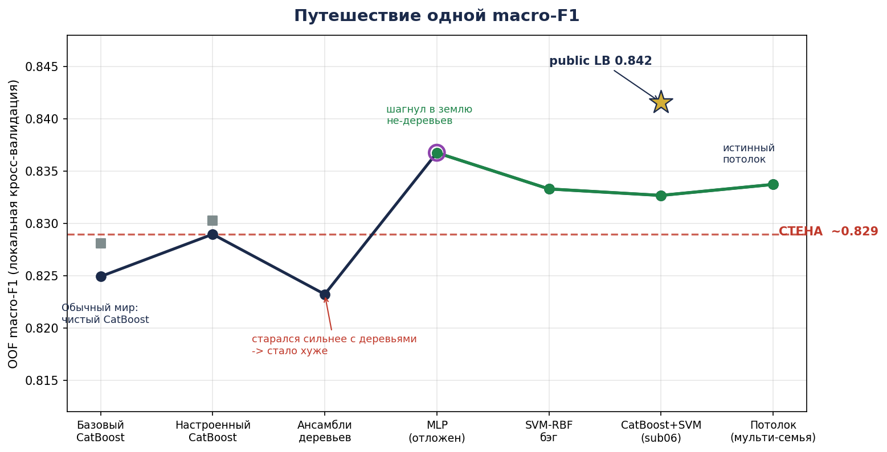
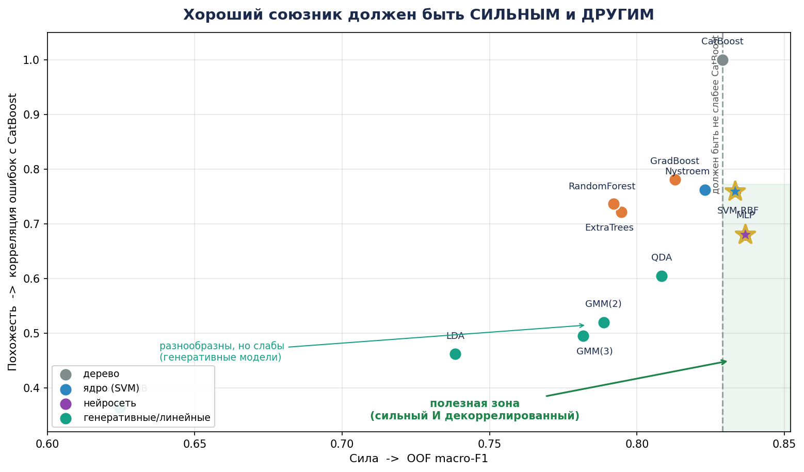
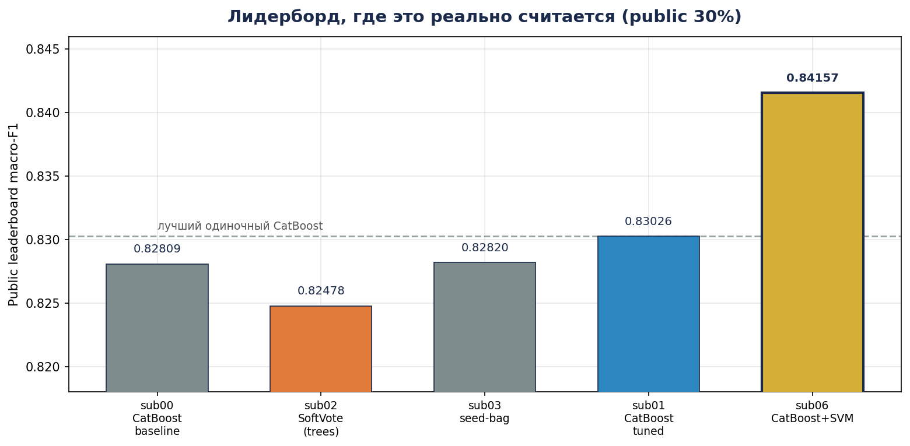

По датчикам ночного сна — мозговые волны (EEG), мышечный тонус (EMG), движения глаз (EOG), пульс, дыхание, кислород в крови — нужно предсказать стадию сна для каждой 30-секундной эпохи: Бодрствование, Лёгкий сон, Глубокий, REM. Четыре класса. 9 000 размеченных эпох для обучения, 5 000 — предсказать. Метрика — macro-F1: все классы равны, поэтому судьбу решает самый слабый класс.
Этот документ намеренно написан как история. Метод важен — но не менее важно почему был сделан каждый поворот. Дальше — реальная последовательность решений и реальные числа за каждым из них.
Жизнь была хороша. Я собрал чистый, честный пайплайн: разведал данные, зафиксировал пять складок кросс-валидации, чтобы все будущие эксперименты были сравнимы, сконструировал несколько физиологически осмысленных признаков (контрасты между EEG-диапазонами, флаг наполовину пропущенного EOG-канала) и обучил CatBoost — градиентный бустинг на деревьях. Он нативно справлялся с 50% пропусков и оптимизировал macro-F1 напрямую.
И всё работало прекрасно. OOF macro-F1 = 0.82898. На публичном лидерборде — 0.83026. Я настраивал глубину, скорость обучения, регуляризацию — победили значения по умолчанию. У меня была сильная, детерминированная, воспроизводимая модель. И я, честно говоря, был доволен.
| Ранняя модель | OOF macro-F1 | Deep (худший класс) |
|---|---|---|
| CatBoost базовый (21 признак + флаг пропуска) | 0.82494 | 0.771 |
| CatBoost настроенный + инженерные признаки (sub01) | 0.82898 | 0.777 |
А потом я попробовал подняться выше. И не смог.
Я добавлял признаки — отношения диапазонов, относительные мощности, вегетативные комбинации. Каждая группа делала хуже. Я искал пороги решения, чтобы спасти Глубокий класс — оптимум был «не менять ничего». Я усреднял девять случайных сидов — чистое снижение дисперсии, без прироста. Чтобы понять, реален ли вообще любой выигрыш, я построил «ворота» из повторной CV: 0.82598 ± 0.00169. Эти крошечные ±0.0017 стали моим законом: любое улучшение меньше этого — шум, а не прогресс.
И я сделал то, что казалось естественным: ансамбли. Ведь много моделей вместе побьют одну? Я объединил CatBoost с RandomForest, ExtraTrees, GradientBoosting в мягком голосовании. Собрал ансамбль из шести разных CatBoost. Стекал их.
Всё стало хуже. Мягкое голосование упало до 0.81952. Ансамбль из разных CatBoost опустился до 0.82324 — ниже одиночной модели. Я работал усерднее и сползал назад. Это, честно, выбивало почву из-под ног.
| Попытка «стараться сильнее» | OOF macro-F1 | против одиночного CatBoost |
|---|---|---|
| Мягкое голосование: CatBoost + RF + ExtraTrees + GradBoost (sub02) | 0.81952 | −0.009 |
| Шесть разных CatBoost, равные веса (sub04) | 0.82324 | −0.006 |
| Сид-бэг из 9 CatBoost (sub03) | 0.82415 | −0.005 |
Каждый ансамбль, который я мог собрать, состоял из деревьев. Я ещё не видел, что именно в этом и была вся проблема.
Вместо «как сделать модель сильнее?» я наконец спросил: «что я делаю не так?»
Я разобрался системно — и ответ прятался на виду. Все модели, что я пробовал, были деревьями. CatBoost, RandomForest, ExtraTrees, GradientBoosting — все они режут мир на одни и те же прямоугольники, выровненные по осям. У них один способ ошибаться. Поэтому, усредняя их, я получал одни и те же ошибки на одних и тех же эпохах. Ансамбль из клонов — это всё ещё одна модель.

Я покинул уют деревьев и проверил семейства с принципиально иным устройством: нейросеть (MLP), ядровую машину (SVM-RBF), генеративные модели (QDA, гауссовы смеси). Каждую я мерил сразу по двум осям — насколько она сильна и насколько её ошибки отличаются от CatBoost.
Нейросеть пробила стену сразу (OOF 0.83677). Но в основу решения я положил SVM-RBF — гладкой, изогнутой границы, которую лестницы-деревья могут лишь приближать. Перебор ширины ядра, затем бэггинг трёх лучших дали 0.83331 — уже выше CatBoost — и, главное, его ошибки коррелируют с CatBoost лишь на 0.76 против ~0.9 у клонов.

Затем я обвенчал два семейства простым фиксированным равновесным усреднением — половина CatBoost, половина SVM. Так родился sub06. На локальной CV — 0.83269; настоящее испытание было ещё впереди.
Здесь история чуть не пошла под откос. Когда я позволил данным подобрать веса блендинга, оценка подскочила до соблазнительных 0.837. Я едва не отправил это решение.
Тогда я провёл адверсариальную перепроверку — переобучил всё с нуля на свежих, независимых складках. Правда оказалась жестокой: бо́льшая часть того «прироста» была ~0.006 чистого шума, который веса просто запомнили и который не выжил бы на новых данных. Ложная вершина.
С этого момента каждое утверждение должно было пережить парную, без утечек, повторную кросс-валидацию: одни и те же свежие складки для ансамбля и для обычного CatBoost, скейлеры и импьютеры обучаются только внутри обучающей складки, без подглядывания. Под этим честным тестом кросс-семейный ансамбль обошёл одиночный CatBoost на +0.0116 macro-F1, в плюсе в каждом повторе — примерно в семь раз больше шумового поля.
Я загрузил sub06. Публичный лидерборд вернул 0.84157 — мой лучший результат с большим отрывом, и выше собственной локальной оценки. Стены больше не было. У меня получилось.

Он даже сдвинул вверх упрямый Глубокий класс — его F1 вырос с 0.777 до 0.785. Впервые самое слабое звено стронулось с места.
Герой должен узнать, где настоящий край карты. И я двинулся дальше — честно. Я добавил самые декоррелированные семейства, какие смог найти: QDA и гауссовы смеси, чьи ошибки пересекаются с CatBoost лишь на 0.52–0.61. Они были великолепно разнообразны… и слишком слабы (0.79–0.81), чтобы помочь простому усреднению. Я дал честному out-of-fold стекеру попробовать выжать из них пользу: он выдавил +0.001 — внутри шума. Я сконструировал признаки специально под SVM и собрал более богатый, более разнообразный SVM-бэг. Оба вернулись с отрицательным результатом.
(Нейросеть остаётся единственным рычагом, измеримо выше шума — около +0.003 над любым не-нейросетевым путём — задокументированная дорога, по которой я не пошёл.)
Я мирно жил за стеной, принял её за край мира, мучился, задал лучший вопрос, перешёл на незнакомую землю, устоял перед лёгкой ложью — и вернулся с чем-то настоящим. Я пробился — и могу это доказать.
| Этап | Модель / идея | OOF macro-F1 | Deep F1 | Примечание |
|---|---|---|---|---|
| База | CatBoost (признаки + флаг пропуска) | 0.82494 | 0.771 | точка старта |
| Настройка | CatBoost + features_v1 (sub01) | 0.82898 | 0.777 | стена · public 0.83026 |
| Сильнее | Мягкое голосование 4 деревьев (sub02) | 0.81952 | 0.765 | хуже |
| Сильнее | 6 разных CatBoost (sub04) | 0.82324 | 0.769 | хуже |
| Кросс-семья | MLP сид-бэг (отложен) | 0.83677 | 0.789 | пробивает стену · errcorr 0.68 |
| Кросс-семья | SVM-RBF grid + бэг | 0.83331 | 0.785 | errcorr 0.76 |
| Финал | Ансамбль CatBoost + SVM (sub06) | 0.83269 | 0.785 | public LB 0.84157 |
| Потолок | Мульти-семейный стек (QDA+GMM) | 0.83374 | — | +0.001 in-sample, в пределах шума — не честный парный прирост |
Одиннадцать ноутбуков Jupyter (01_eda → 11_multifamily_ensemble), сгенерированных из единого источника истины и запускаемых от начала до конца одной командой:
C:/ProgramData/anaconda3/python.exe run_all.py
Пять фиксированных складок StratifiedKFold (сид 42) общие для всех ноутбуков, поэтому все out-of-fold матрицы вероятностей выровнены по строкам и напрямую сравнимы. Все сиды зафиксированы; CatBoost детерминирован (побитово одинаков между запусками). Шумовое поле ±0.00169 получено из «ворот» повторной CV 5×5; преимущество финального ансамбля подтверждено парной повторной CV на независимых складках.